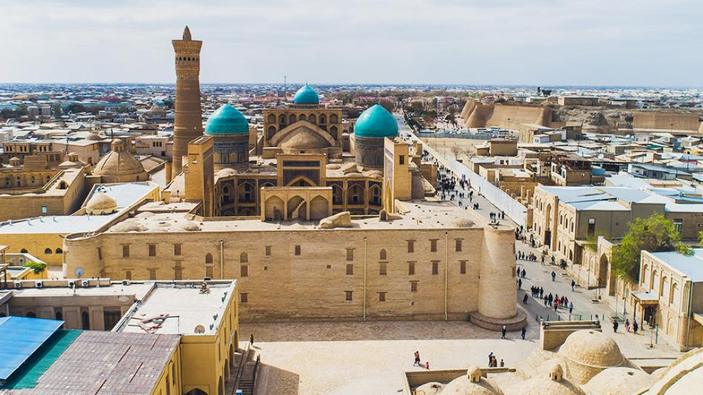

Что посмотреть в Бухаре?
Бухара, один из древнейших городов в Центральной Азии, словно живая энциклопедия истории и культуры. Своим богатым наследием, пленяющими архитектурными шедеврами и духом старины, Бухара привлекает туристов со всего мира. Давайте рассмотрим, что следует посмотреть в этом удивительном городе.
1. Архитектурные чудеса
Бухара славится своими архитектурными шедеврами, олицетворяющими величие искусства и ремесел средневековья. Самый известный из них - Комплекс Пой-Калъян - культовое место, сочетающее в себе мечеть, медресе и минарет. Величественный минорет Калъян, высотой более 45 метров, стоит как немое свидетельство векового наследия.
2. Лабиринт узких улочек Старого Города
Средневековая атмосфера ощущается в Старом Городе, где узкие извилистые улочки, каменные дома и крошечные магазины создают впечатление временной машины. Прогулка по этим улочкам погружает вас в аутентичный опыт средневековья, позволяя почувствовать дух древности.
3. Медресе и мечети
Бухара известна своими многочисленными медресе - традиционными исламскими учебными заведениями. Медресе Мир-Араб, Медресе Улугбека и Медресе Абдулазиз-Хана восхищают не только своей архитектурой, но и историческим значением, вложенным в каждую каменную кладку.
4. Зимний дворец Арк
Арк - крепость, возвышающаяся на высоком холме, была сердцем древнего Бухарского эмирата. Ее величественный Зимний дворец с поразительной архитектурой и внутренними дворами является отражением роскоши и власти, царивших здесь в прошлом.
5. Современные чудеса
В Бухаре сочетается древнее и современное. Современные арт-галереи, кафе и рестораны прекрасно вписываются в контекст старого города, создавая уникальный ансамбль. Торговые ряды Токи СараФишта стали местом, где искусство и ремесла соседствуют с современным комфортом.
6. Панорамные виды с миноретов
Не пропустите возможность подняться на вершину миноретов, чтобы насладиться захватывающими панорамными видами на город и окрестности. Виды с Минарета Калъян и Минарета Пой-Калъян просто великолепны и оставляют незабываемые впечатления.
7. Чарующий базар Ляби Хауз
Любители шопинга и восточных базаров обязательно оценят местный базар Ляби Хауз. Здесь можно найти все: от традиционных ремесел и сувениров до ароматных специй и ярких тканей. Атмосфера базара погружает в аутентичный образ жизни города.
8. Музей истории Бухары
Погружение в историю Бухары лучше всего начать с Музея истории Бухары. Экспозиции расскажут о различных периодах развития города, его вкладе в мировую культуру и уникальных исторических событиях.
В заключение, посещение Бухары - это не просто туристическое путешествие, а настоящее временное погружение в средневековый калейдоскоп. Старинные улицы, величественные постройки и восточные базары создают уникальную атмосферу, в которой сливаются воедино вековые традиции и современные веяния.